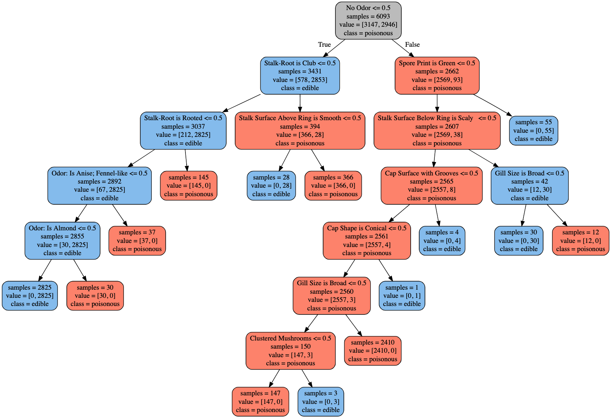

Discover how a mushroom dataset can guide you in distinguishing between poisonous and edible mushrooms. This data, conveniently available through UCI, is also hosted on my GitHub for easy access.
This project aims to demonstrate the implementation of a decision tree model in a practical context. After a couple of years spent studying statistics and enrolling in various courses, I was eager to apply what I've learned, no matter how seemingly insignificant. You can find both the dataset and the scripts used on my GitHub.
Several models can be utilized to predict outcomes, but I desired a model that offers traceable steps and could serve as a guide. Unlike many models that output a result without revealing the journey, decision trees differ – you can visually comprehend the steps the model undertook to arrive at its conclusion.
How I Created this Model
I first encountered this dataset in my Applied Machine Learning Course at the University of Michigan. The dataset was utilized as a teaching tool for identifying the Gini importance of each feature. Additionally, we were tasked to construct a decision tree using another unrelated dataset. Upon discerning the significance of each feature, I was intrigued to see if I could turn this into a comprehensible decision tree that could possibly classify mushrooms as edible or poisonous.
To achieve this, I used Jupyter notebooks and created a local directory for all the data and other elements I would be working on. The steps I followed are presented here in a more organized sequence than the actual process - initially, I attempted to input the data into the classifier without performing data cleanup. While this didn't affect the outcomes, it resulted in an unreadable dataset/tree. The bulk of my project time was dedicated to gaining a deeper understanding of decision trees, what a random forest is, what Gini importance implies, and reading documentation on visualizing the tree. I used Graphviz to manually populate the tree and relabel the fields or features of the model.
The Outcome
My objective was to create a useful tool for mushroom foragers, despite the inherent risk in such activity. The result of this project is presented below. Using this model, a user can examine a mushroom and answer a question. If the answer to that question is true, you move left on the diagram; if false, you move to the right. A coral-colored node (leaf) signifies that it is highly likely the mushroom is poisonous, while a blue one indicates it's edible. Despite the model's accuracy score, it isn't flawless. Always be aware of the risks associated with this activity, and consult an expert.
